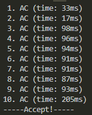
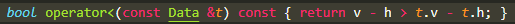
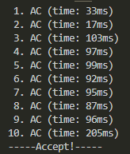

邻项比较排序
定义
本来的排序型贪心，我们需要任意两个项都满足决策条件。
但我们发现，如果数列每对相邻两项都满足决策条件，根据不等式的传递性，那么也就可以推出任意两项满足决策条件。
于是我们分析决策条件时，就不用分析任意两项，可以就分析邻项然后推出决策条件。
【主要用于如果决策条件复合了其他数据（比如：结果计算为$\sum_{i=1}^na_i$，复合之前的数列），这样分析可以减少分析难度】
-
典型例题：
P1080 国王游戏可以见到这题便有一个「排在该大臣前面的所有人的左手上的数的乘积」这句话，
如果我们分析任意两项的话，还要考虑两者中间的数据。所以我们可以指通过分析相邻两项，然后通过传递性，推及任意两项都满足。
【其实用任意两项分析也完全可以，而且分析也不难_(:з」∠)_……
那么实现的关键就是找到最终的决策方案（序列满足的条件），然后根据这个决策sort就行了_(:з」∠)_……
【但是会有注意点后面会讲到……
题目解决方法
引例
以下以此例题为例具体讲解：
SWJTU OJ——10.31 A 排队
题目与国王游戏类似，用邻项交换排序的思想来找决策条件。
1、找出每种状态的ans，选邻项代入
题目描述：
也就是说，请重新给班尼特排队，要求是最大化$\min_{i=1}^n{-h_i+\sum_{j=1}^i v_j}$。
那么每种状态的ans$=\min_{i=1}^nw_i$。
既然要求$\min_{i=1}^n{w_i}$，所以我们就比较邻项的$w_i,w_j$，比较其两项的$\min(w_i,w_j)$，选择最大ans的状态。
- 为什么我们这样排序，能使
ans$=\min_{i=1}^nw_i$取得最小？就相当于把比较时候的最小值看成短板，每次比较一次选最高的那个，就会把短板提上去一点，这样最后得到的就是最高的短板，也就是最大的$\min$……
2、假设相邻位置，写出两种状态的ans
我们首先要把每个位置的收益表达式写出来：
题目描述：治疗第$i$个班尼特的收益$w_i$等于前面治疗的所有班尼特的$v$之和减去$h_i$。 $$ w_i=\sum_{j=1}^iv_j-h_i $$
那么我们假设两个相邻位置$i,j$。其中$i$在$j$前，即$i=j-1$。【必须先假设一个在另一个前后，否则不可能$i$在$j$前满足，$j$在$i$前也满足】
记：两者之前的$\sum v$为$sum$。【将一些求$w$要用到的比如$\sum$记为其他符号表示，可以简化式子】
然后分别讨论$i$在$j$前和$j$在$i$前的情况：
-
原本状态：$i$在$j$前
$$ \begin{matrix} h & v \
\vdots & \vdots(sum) \
h_i & v_i \
h_j & v_j \
\vdots & \vdots \
\end{matrix} $$对$i$的收益：$w_{i1}=sum+v_i-h_i$
对$j$的收益：$w_{j1}=sum+v_i+v_j-h_j$
此状态的ans=$\min(w_{i1},w_{j1})$ -
如果交换：$j$在$i$前
$ \begin{matrix} h & v \
\vdots & \vdots(sum) \
h_j & v_j \
h_i & v_i \
\vdots & \vdots \
\end{matrix} $对$i$的收益：$w_{i2}=sum+v_j+v_i-h_i$，
对$j$的收益：$w_{j2}=sum+v_j-h_j$
此状态的ans=$\min(w_{i2},w_{j2})$
3、根据题意写出排序条件并化简，得到最终决策方案
题目描述：芭芭拉想让治疗每个班尼特收益的最小值最大。
题意要求使最小收益最大化，
则最初排序条件为：$\min(w_{i1},w_{j1})\ge\min(w_{j2},w_{i2})$
【或者说**交换条件**为：$\text{if} \quad (\min(w_{i1},w_{j1})<\min(w_{j2},w_{i2})) \quad \text{swap}(i,j)$】
*其他例子：国王游戏中，是使最大收益最小化。则排序条件为：$\max(w_{i1},w_{j1})\le\max(w_{i2},w_{j2})$*
然后对这个决策条件化简，使得能直接表达出来。
【所谓不能直接表达的，便是条件中含有如$\sum$之类的运算。而我们不可能用循环专门去求，只能通过化简把他消掉】
化简方法：
下列所提到的化简方法参考含max、min的不等式。
利用“完全展开法则”，观察是否含有恒成立或恒不成立。
【或者直接观察题目中$w_{i1},w_{j1},w_{j2},w_{i2}$间的关系，找出恒成立或恒不成立，然后利用“**消元法则**”】利用排序规则下特殊的“相同无关原则”，结合“取反性、结合性”等性质，化简并得到最终的最简决策
则本题中：
展开为$\text{if} \quad ((w_{i1}<w_{i2} & w_{i1}<w_{j2}) | (w_{j1}<w_{i2} & w_{j1}<w_{j2})) \quad \text{swap}$。
- 发现$w_{i1}<w_{i2}$恒成立：
$\sout{sum+v_i-h_i} \quad?\quad \sout{sum}+v_j\sout{+v_i-h_i}$
$\implies 0<v_j$ - 发现$w_{j1}<w_{j2}$恒不成立：
$\sout{sum}+v_i\sout{+v_j-h_j} \quad?\quad \sout{sum+v_j-h_j}$
$\implies v_i>0$
故原式可简化为：
$\text{if} \quad (w_{i1}<w_{j2}) \quad \text{swap}$
$\implies \text{if} \quad (v_i-h_i < v_j-h_j) \quad \text{swap}$
这便是化简后的**决策条件**。
注意的点：
不一定要化到最简，只要能在代码里直接表达就行。
本题中原始条件经过部分化简：
运行结果：
而完全化简后为：

运行结果：
可见差异并不大，所以说只要能化简到能表达的地步就可以。
当然如果能化到最简更好，肯定还是比带min的条件快的。

4、自定义结构体，重载<运算符，使用sort，遍历寻答案
这一步就不多说了，重载的时候按自己分析到的最终最简决策重载就行。
但重点是：
这样排序出来后只是最优状态，
至于最终答案ans要从头到尾遍历寻找，即不一定是第一个为最终答案。
可能后面计算结果不是递增或递减，则最终答案不是第一个。【具体题目具体分析】
标程代码
#include <bits/stdc++.h>
using namespace std;
const int N = 100010;
struct Data
{
int h, v;
bool operator<(const Data &t) { return v - h > t.v - t.h; } //以推出的最终最简决策重载<运算符
} d[N];
int main()
{
int n;
scanf("%d", &n);
for (int i = 1; i <= n; ++i)
scanf("%d%d", &d[i].h, &d[i].v);
sort(d + 1, d + n + 1); //就一个sort
int tmp = 0, res = 1e9;
for (int i = 1; i <= n; ++i)
{
tmp += d[i].v;
res = min(res, tmp - d[i].h); //从头到尾遍历，res记录最终答案
}
printf("%d\n", res);
return 0;
}
使用注意事项
注意之前我们定义中存在一个推论：
如果数列每对相邻两项都满足决策条件，根据不等式的传递性，那么也就可以推出任意两项满足决策条件。
所以假如我们所推的某个决策条件，不满足不等式的传递性，那么用这个方法就会造成错误。
而这种必须要满足不等性的传递性，有个专门术语叫做“严格弱序”。
先前知识——严格弱序
- $X \not< X$（比较条件非自反性）
意思是：$X$与$X$本身，不满足比较条件。
- 反例：比较条件是$a_i \ge a_j$。
那么$X(a_i) \ge X(a_i)$满足比较条件，为$X < X$，故不是严格弱序。- 若$X < Y$，则$Y \not< X$（比较条件非对称性）
意思是：$X$和$Y$比较若满足比较条件，则$Y$和$X$比较不会满足条件。
- 反例：比较条件是$a_i \ge a_j$。
那么若$a_i=a_j$，$X(a_i) \ge Y(a_j)$满足条件，
但$Y(a_j) \ge X(a_i)$也满足条件，故不是严格弱序。- 若$X < Y,Y < Z$，则$X < Z$（比较条件不等传递性）
意思是：$X$和$Y$满足比较条件，$Y$和$Z$满足比较条件，则$X$和$Y$满足比较条件。
反例：比较条件是$\min(a_i,b_j) \le \min(a_j,b_i)$。
那么对于下组数据：
$a$ $b$ $i$ $2$ $1$ $j$ $1$ $1$ $k$ $1$ $2$ $X(\min(a_i,b_j)=1)<Y(\min(a_j,b_i)=1)$
$Y(\min(a_j,b_k)=1)<Z(\min(a_k,b_j)=1)$
但$X(\min(a_i,b_k)=2) \not< Z(\min(a_k,b_i)=1)$，故不是严格弱序。 【再次提示这里的$<$并不代表小于，而是代表符合比较条件的意思。】- 若$X=Y,Y=Z$，则$X=Z$（比较条件相等传递性）
意思同上。
在“ouuan”dalao的讲解种写的是$x\not<y,y\not<x,y\not<z,z\not<y$（不可比性的传递性）。我改成这样更好理解。
不过注意判断相等的方法是$x\not<y,y\not<x$这么判断的。
- 反例见下引例的「错误分析」
- 这里的$X$、$Y$、$Z$代表的是取某下标$i$、$j$后的决策条件的一侧元素。并不一定是某一具体数据。
- 这里的$<$并不代表小于的意思，而是代表满足比较条件，那么$\not<$则代表不满足比较条件。
引例
P2123 皇后游戏
按照之前的方法尝试解决
-
找出每种状态的
ans，选邻项代入题目描述：
她想请你来重新安排一下队伍的顺序，使得获得奖金最多的大臣，所获奖金数目尽可能的少。可知每种状态的
ans$=\max_{i=1}^nw_i$。那么比较邻项$i,j$，就是$max(w_i,w_j)$。
-
假设相邻位置，写出两种状态的ans
首先先写收益表达式：
$$ w_i=\max(w_{i-1},\sum_{j=1}^ia_j)+b_i $$ 【第一位的收益可以合并到这个表达式里，令$w_0=0$就可以了。】假设相邻位置$i,j$。其中$i$在$j$前，即$i=j-1$。
记：之前的$\sum a$为$sum$，前一项的$c_{i-1}$为$pre_w$。会发现，由于$a,b>0$，整个收益表达式中又没出现会使收益变少的运算，故收益单增。
即在后面的大臣的收益一定大于在前面的。
$i$在$j$前时，则$w_j$一定大于$w_i$，所以$\max(w_i,w_j)=w_j$，可以拆开一层$\max$。-
原本状态：$i$在$j$前
$ \begin{matrix} a & b & c \
\vdots(sum) & \vdots & \vdots(pre_w) \
a_i & b_i & w_{i1} \
a_j & b_j & w_{j1} \
\vdots & \vdots & \vdots \
\end{matrix} $$w_{i1}=\max(pre_w,sum+a_i)+b_i$
$w_{j1}=\max(w_{i1},sum+a_i+a_j)+b_j$
此状态的ans=$\max(w_{i1},w_{j1})=w_{j1}$ -
如果交换：$j$在$i$前
$ \begin{matrix} a & b & c \
\vdots(sum) & \vdots & \vdots(pre_w) \
a_j & b_j & w_{j2} \
a_i & b_i & w_{i2} \
\vdots & \vdots & \vdots \
\end{matrix} $$w_{i2}=\max(w_{j2},sum+a_j+a_i)+b_i$
$w_{j2}=\max(pre_w,sum+a_j)+b_j$
此状态的ans=$\max(w_{i2},w_{j2})=w_{i2}$
-
-
根据题意写出排序条件并化简，得到最终决策方案
题意要求使最大收益最小化，
则排序条件：$\max(w_{i1},w_{j1}) \le \max(w_{i2},w_{j2})$开始化简：
$\max(w_{i1},w_{j1}) \le \max(w_{i2},w_{j2})$
$\implies w_{j1} \le w_{j2}$
$\implies \max(\sout{pre_w+b_i+b_j},\underline{sum+a_i}+b_i+\underline{b_j},\underline{sum+a_i}+a_j+\underline{b_j}) \le \max(\sout{pre_w+b_j+b_i},\underline{sum+a_j}+b_j+\underline{b_i},\underline{sum+a_j}+a_i+\underline{b_i})$
【删除线的部分代表根据相同无关原则可以消去；下划线的部分代表根据结合性可以提出来】
$\implies \max(b_i,a_j)+sum+a_i+b_j \le \max(b_j,a+i)+sum+a_j+b_i$
$\implies \max(b_i,a_j)-a_j-b_i \le \max(b_j,a_i)-a_i-b_j$
$\implies \max(-a_j,-b_i) \le \max(-a_i,-b_j)$
$\implies -\min(a_j,b_i) \le -\min(a_i,b_j)$
$\implies \min(a_j,b_i) > \min(a_i,b_j)$最终的决策条件：$\min(a_j,b_i) > \min(a_i,b_j)$
-
那就开写呗……
然后交上去会WA，80分。
证明我们这种方法有思路缺陷。
错误分析
这里便不满足严格弱序的相等传递性这个性质。
当取$i,j$时，若$\min(a_i,b_j)=\min(a_j,b_i)$，
当取$j,k$时，若$\min(a_j,b_k)=\min(a_k,b_j)$，
则需要满足：取$i,k$时，$\min(a_i,b_k)=\min(a_k,b_i)$
反例：
| $a$ | $b$ | |
|---|---|---|
| $i$ | $3$ | $5$ |
| $j$ | $1$ | $1$ |
| $k$ | $7$ | $2$ |
虽然$\min(a_i,b_j)=\min(a_j,b_i)$和$\min(a_j,b_k)=\min(a_k,b_j)$都满足，
但却不满足$\min(a_i,b_k)=\min(a_k,b_i)$。
【只需要让$a_j,b_j$相等，就可以构建众多反例。】
错误根本原因（新内容！）
- 为什么不满足严格弱序中传递性就会造成错误：
因为
sort实现时，采用了分治的思想。
会将数据分为两个部分，对两个部分进行排序，然后使数列直接有序。
但问题就刚好出在这个“直接有序”上。之所以在左右都有序后，会认为整个数列直接有序，
就是因为利用了严格弱序中的传递性：
认为$X < Y,Y < Z$，则$X < Z$，
以及$X = Y,Y = Z$，则$X = Z$。但假如不满足的第一条的话，分治处理过后：
左侧的数是小于中间的，中间的数也是小于右边的，但左侧的是却不一定小于右边的了。
会造成很严重的合并后错误。但假如不满足的第二条的话，分治处理过后：
如果都是小于条件，根据第一条可推合并后也有序，没有问题。这也就是为什么我们这个方法还能得部分分的原因——决策判断时没判断出相等。
但一旦出现等于条件的情况，则不能推得左边的也等于右边的，
同时$X=Y, Y<Z \implies X<Z$、$X<Y, Y=Z \implies X<Z$也无法推得。举例：判断条件为$\min(a_i,b_j) < \min(a_j,b_i)$【就本题我们推的条件…… 对以下两组数据：
$a$ $b$ $i$ $1$ $1$ $j$ $1$ $2$ $k$ $2$ $2$ 其中$X(i,j)=Y(j,i),Y(j,k)<Z(k,j)$，但$X(i,k) \not< Z(k,i)$，为$X=Z$。
$a$ $b$ $i$ $1$ $2$ $j$ $2$ $1$ $k$ $1$ $1$ 其中$X(i,j)<Y(j,i),Y(j,k)=Z(k,j)$，但$X(i,k) \not< Z(k,i)$，为$X=Z$。
那么不满足传递性，就会导致虽然序列大部分满足决策条件，但并不是任意两项都满足条件的。
而回到我们贪心的基本要求：需要任意两个元素都满足决策条件。
故会造成错误。
改进方法
其实上述主要问题都归结于我们对相等状况的定义模棱两可。
- 对于满足严格弱序中的传递性的数据来说：
出现相等状况，交换或者不交换都无所谓，因为可以通过传递性证得交换后对数列无影响。
所以可以保持这种模棱两可的定义。也就是说这种数据，我们即使将判断中的不取等判断改为取等的判断，也依旧不会有影响。只不过会多交换几次，让状态变得不同，但最终结果一致。
- 对于不满足严格弱序中的传递性的数据来说：
我们就必须对相等状况作出严格的操作规定了，否则两种不同的状态会导致数据最终结果的不一致。
也就是说我们要对相等状况进行特判。
那么我们就来考虑在$\max(w_{i1},w_{j1}) = \max(w_{i2},w_{j2})$的相等条件下，又该加什么判断。
也就是说，除了这个很显然的条件在影响ans外，还有没有什么可能影响ans。
根据个人看法不同，会有很多种可能的条件，以下列举两种正确的：
-
会发现：$a$的前缀和会影响$\max(c_{i-1},\sum_{j=1}^ia_j)$这个的选择，从而影响$w_i$，从而影响
ans。
因为要找最小的ans，所以我们**把$a$更小的放在前面**，这样就能让更加保证所得状态是最优的了。 -
会发现：两种状态的前后两项$w$，后者是一样的【我们比较条件就是用的两状态的后者】，因此我们要让前者尽量小，从而确保
ans更小。
所以我们把$b$更小的放在前面。
- 那么假如这两个条件判断出来也是相等的，需不需要再特判呢？
假如$\min(a_j,b_i) = \min(a_i,b_j)$和$a_i = a_j$（或者$b_i = b_j$）同时满足，
则可以推出$a_i=a_j,b_i=b_j$，也就是这两项的数据完全一致，并不是比较用数据一致，因此我们这里也可以即交换又不交换，保持模棱两可定义。
很特殊的hack数据
在这里，我们会惊讶地发现，如果用选择排序的话，虽然是会TLE，但其结果是正确的。
【相关原因请查看后面的「有关排序的深层理解」部分】
个人发现了选择排序答案是正确的后，对各种排序的实现展开了思考和实验。
认为像快速排序或归并排序等，是因为采用典型的分治思想才导致需要满足严格弱序的。
那么对于其他排序方法比如“希尔排序”、“堆排序”、“锦标赛排序”等是否不需要满足严格弱序呢？
【这里没考虑“计数排序”、“基数排序”和“桶排序”这三种非比较式排序算法。因为这里没有关键字，无法使用这三种排序方法。
所以在实验的时候就弄出了一些其他的hack数据，
然后其中发现了一组很特殊的hack数据！(:з」∠)……
数据：
1
59 7
1 1
4 5
1 2
6 5
*以下表格中的option表示$\max(c_{i-1},\sum_{j=1}^ia_j)$选择的哪个*。
-
标准答案：
27 -
利用选择排序后的结果
$a$ $b$ $c$ option 1 $1$ $2$ $3$ 2 $1$ $1$ $4$ $c$ 3 $4$ $5$ $11$ $\sum a$ 4 $9$ $7$ $22$ $\sum a$ 5 $6$ $5$ $27$ $c$ -
特殊性
我们如果排序成：$a$ $b$ $c$ option 1 $4$ $5$ $9$ 2 $1$ $2$ $11$ $c$ 3 $9$ $7$ $21$ $\sum a$ 4 $1$ $1$ $22$ $c$ 5 $6$ $5$ $27$ $c$ 会发现$1$和$2$（$i=1,j=2$）这两组数据，
其实是不满足$\min(a_i,b_j) < \min(a_j,b_i)$这个条件的！故这也告诉了我们：最优解也可能存在有两项不满足决策条件的状态。
【更准确叙述请查看后面的「有关贪心决策的满足度影响」部分】
有关自己使用其他排序方法验证的代码，以及其他两组hack数据可见Pastebin。
决策条件是否正确的判断方法
1、条件检查器
基于以上分析，我们发现：
如果按上述“基本决策寻找方法”得到的决策条件$P$是正确的，必须要满足基本的排序型贪心的条件：
数列任意两项满足决策条件。
如果决策条件$P$满足以下条件，则可证得排序后一定满足该基本条件：
- 满足严格弱序中的两个传递性。
根据以上一点，我们可以编写一个条件检查器。
【这个条件检查器的方法是参考自“ouuan”的博客后了解的，个人在其基础之上有所修改并加入了注释……
#include <algorithm>
#include <cstdio>
using namespace std;
bool cmp(int i, int j);
int a[10], b[10];
int main()
{
for (a[0] = 1; a[0] <= 6; ++a[0])
for (b[0] = 1; b[0] <= 6; ++b[0]) //构造第一组a,b数组数据：用来判断自反性
{
if (cmp(0, 0)) //不满足自反性。
//分析知这条对于贪心思路并不是很重要，所以注释了。但如果用sort就很重要。
//printf("No irreflexivity: %d %d\n", a[0], b[0]);
for (a[1] = 1; a[1] <= 6; ++a[1])
for (b[1] = 1; b[1] <= 6; ++b[1]) //构造第二组a,b数组数据：用来判断非对称性
{
if (cmp(0, 1) && cmp(1, 0)) //非对称性的判断
printf("No asymmetric: %d %d %d %d", a[0], b[0], a[1], b[1]);
/* 这部分原本是判断 我们新的决策条件 与 最开始分析的决策条件 是否判断一致，但其实可以不用判断。
//同理，在ouuan所写的判断器中：有一个关于「排序完成后任意交换相邻元素均不会使答案更优」这个的判断，但实际上如果满足了严格弱序一定也会满足这个条件，也不用判断。
bool our_judge = cmp(0, 1),
real_judge = min(a[0], b[1]) < min(a[1], b[0]),
if_equal = min(a[0], b[1]) == min(a[1], b[0]);
//注意这里真实判断（以决策条件判断），如果为0：有可能真的不满足，但也有可能是相等情况；如果为1：那就一定是满足
//所以我们要加个if_equal，如果是相同状况则不判断是否与真是判断相同
if (!if_equal && our_judge != real_judge) //与真正决策条件判断不同
printf("Not correct(%s): %d %d %d %d\n", (our_judge == 1 ? "We judge it's right, but truth is wrong." : "We judge it's wrong, but truth is right"), a[0], b[0], a[1], b[1]);
*/
for (a[2] = 1; a[2] <= 6; ++a[2]) //构造第三组a,b数据：用来判断传递性
for (b[2] = 1; b[2] <= 6; ++b[2])
{
bool flag_inequ = 1,
flag_equ = 1;
bool cmp_01 = cmp(0, 1),
cmp_12 = cmp(1, 2),
cmp_02 = cmp(0, 2);
//注意我们判断两状态是否是用的!cmp(i,j) && !cmp(j,i)（非对称性的利用）
bool euqal_01 = !cmp(0, 1) && !cmp(1, 0),
euqal_12 = !cmp(1, 2) && !cmp(2, 1),
euqal_02 = !cmp(0, 2) && !cmp(2, 0);
if ((cmp_01 == cmp_12 && (cmp_01 == 1 || (cmp_01 == 0 && !euqal_01 && !euqal_12))) && cmp_01 != cmp_02) //不符合不等传递性
{
/* 怎么才算符合不等传递性：
1 1 -> 1
1 0 -> ? (2 < 7, 7 \not< 5 ---> 2 < 5)(2 < 7, 7 \not< 1 ---> 2 \not< 1)
0 1 -> ? (Same way)
0 0 -> 0 //但要注意这里cmp为0：有可能是不满足，也有可能是因为等于的情况。所以要加!euqal来排除等于情况
*/
flag_inequ = 0;
printf("No transitivity of inequivalence: %d %d %d %d %d %d\n", a[0], b[0], a[1], b[1], a[2], b[2]);
}
if (!(euqal_01 == 0 && euqal_12 == 0) && (euqal_01 && euqal_12) != euqal_02) //相等传递性
{
/* 怎么才算符合相等传递性：
1 1 -> 1
1 0 -> 0
0 1 -> 0
0 0 -> ? (2 ≠ 3, 3 ≠ 2 ---> 2 = 2)//这个很好知道吧【……
*/
flag_equ = 0;
printf("No transitivity of equivalence: %d %d %d %d %d %d\n", a[0], b[0], a[1], b[1], a[2], b[2]);
}
if (flag_inequ == 1 && flag_equ == 0) //私货：求证如果满足不等传递性，但不满足相等传递性，是否X=Y,Y<Z--->X<Z；X<Y,Y=Z--->X<Z？
{
printf("===In Case===\n");
bool euqal_cmp01 = !cmp(0, 1) && !cmp(1, 0),
ineuq_cmp01 = cmp(0, 1),
euqal_cmp12 = !cmp(1, 2) && !cmp(2, 1),
ineuq_cmp12 = cmp(1, 2),
euqal_cmp02 = !cmp(0, 2) && !cmp(2, 0),
ineuq_cmp02 = cmp(0, 2);
if (euqal_cmp01 && ineuq_cmp12)
{
if (!ineuq_cmp02 && !euqal_cmp02)
printf("---X=Y,Y<Z--->X not< Z: %d %d %d %d %d %d\n", a[0], b[0], a[1], b[1], a[2], b[2]);
else if (!ineuq_cmp02)
printf("---X=Y,Y<Z--->X = Z: %d %d %d %d %d %d\n", a[0], b[0], a[1], b[1], a[2], b[2]);
}
if (ineuq_cmp01 && euqal_cmp12)
{
if (!ineuq_cmp02 && !euqal_cmp02)
printf("---X<Y,Y=Z--->X not< Z: %d %d %d %d %d %d\n", a[0], b[0], a[1], b[1], a[2], b[2]);
else if (!ineuq_cmp02)
printf("---X<Y,Y=Z--->X = Z: %d %d %d %d %d %d\n", a[0], b[0], a[1], b[1], a[2], b[2]);
}
}
}
}
}
return 0;
}
bool cmp(int i, int j)
{
/* 展开式：【用来debug方便watch的……
int min_ij = min(a[i], b[j]),
min_ji = min(a[j], b[i]);
bool ans = 0;
if (min_ij == min_ji)
ans = a[i] < a[j];
else
ans = min_ij < min_ji;
return ans;
*/
return min(a[i], b[j]) < min(a[j], b[i]); //Case.1
//return min(a[i], b[j]) <= min(a[j], b[i]); //Case.2
//return min(a[i], b[j]) == min(a[j], b[i]) ? a[i] > a[j] : min(a[i], b[j]) < min(a[j], b[i]); //Case.3
//return min(a[i], b[j]) == min(a[j], b[i]) ? a[i] < a[j] : min(a[i], b[j]) < min(a[j], b[i]); //Case.4
}
上述提到了：如果满足了严格弱序一定也会满足「排序完成后任意交换相邻元素均不会使答案更优」这个条件。
所以我并没有写上“ouuan”博客中的那个条件。
而且对于严格弱序，我也认为只用判断传递性即可。
【如果这种修改有误，请务必告诉我！……
因为决策条件$P$满足严格弱序后，我们按照$P$排序后，一定会使任意两项均满足$P$，则满足我们的贪心的思想，使得肯定这个状态是最优解状态。
【但这种口头解释没有严格证明可能没有说服力，可以自己在判断器里删掉注释然后验证一下_(:з」∠)_……
2、与选择排序对拍
当然，我们发现了：用选择排序的话结果是正确的。
所以我们也可以很快地写个选择排序，然后跟我们新的方法进行对拍。
其他补充点
有关排序的深层理解
我们发现选择排序用之前的条件，虽然会TLE，但是是正确的。
洛谷上测试状态【其余未放出的均AC】：
将其两组数据放到本地测评：


主要就是因为排序这种绝对的$O(n^2)$的算法，是严格让所有数据都两两比较。
正式因为其两两比较，使得不需要利用满足数据严格弱序的传递性。
不会像快排或归并等其他非$O(n^2)$的算法一样，利用严格弱序中的传递性，来对某些情况减少判断，达成了降低复杂度的办法。
也就是说，他们为了提高速度，省略了一些比较。代价就是数据必须要满足一定的条件，即严格弱序。
同样，就连冒泡排序这种本来也是$O(n^2)$的排序算法【但实际上并不是绝对的$O(n^2)$，其最坏是$\frac{(n-1)n}{2}$次操作】，
因为只是比较相邻的数据，并未严格任意两两比较。也是利用了传递性。
有关贪心决策的满足度影响
之前发现：
让任意两项都满足决策条件，是一定是最优解的。
但之前发现：如果存在两项不满足，也有可能是最优解。
也就是任意两项都满足决策条件的这种状态，是最优解状态的一种，为$∈$关系。
但我们只能去找任意两项均满足的这种状态。因为对于存在两项不满足的，也有可能不是最优解，就成了概率问题。
【而这道题概率出来就是80分……
有关排序对严格弱序的不同要求
- $X \not< X$（比较条件非自反性）
- 若$X < Y$，则$Y \not< X$（比较条件非对称性）
- 若$X < Y,Y < Z$，则$X < Z$（比较条件不等传递性）
- 若$X=Y,Y=Z$，则$X=Z$（比较条件相等传递性）
前面已经说了，对于1、2点，其实对于贪心的题目要求并不严格。
不满足的话只是会多交换几次，导致状态不同，但最终的ans是一样的。
但某些算法要求必须要遵守1、2点。
-
对于用STL库的
sort()：
其必须还要考虑1、2点非自反性和非对称性。因为内部的算法实现，对下标的判断需要用到这两个性质，否则会越界导致
RE。
【不过我没有具体去看函数内部的代码实现，只是根据网上搜的以及自己实验得出来的，不一定准确。但确实不考虑这两个的话会出现RE…… -
对于其他非$O(n^2)$排序方法：
如：归并排序merge：
则不用考虑1、2点。
【当然还是要根据自己的排序写法来判断是否需要满足1、2点……
有关传递性的简单判断
我们排序比较时，只会比较两个元素，也就是两个下标，一般用$i,j$代表。
而排序（决策）条件，也一定是与$a_i$和$a_j$的衍生关系。
那么排序条件的下标会有两种情况：
-
一侧只有一个下标
形如：$cmp(x,y)=A_x?A_y$当比较条件一侧只有一个下标的时候很好理解，就是普通的数列排序。
单侧下标时，两个下标的选择不会影响其对应的比较用数据的值，
故一般能符合比较条件不等传递性和比较条件相等传递性。- 举例：
- 条件为$a_i>a_j$
取$i,j$：$a_i=a_j$
取$j,k$：$a_j=a_k$
取$i,k$：$a_i=a_k$ - 条件为$a_i+a_{i+1}>a_j+a_{j+1}$
取$i,j$：$a_i+a_{i+1}=a_j+a_{j+1}$
取$j,k$：$a_j+a_{j+1}=a_k+a_{k+1}$
【则可直接推得$a_i+a_{i+1}=a_j+a_{j+1}=a_j+a_{j+1}=a_k+a_{k+1}$】
取$i,k$：$a_i+a_{i+1}=a_k+a_{k+1}$
-
一侧两个下标都有
形如：$cmp(x,y)=A_{x,y}?A_{y,x}$当一侧两种下标都有时，则不同下标的选择会影响其对应的比较用数据的值。
故需要具体判断是否比较条件传递性和比较条件相等传递性。- 举例：
- 条件为$a_i+a_{j+1}>a_j+a_{i+1}$
取$i,j$：$a_i+a_{j+1}=a_j+a_{i+1}$
取$j,k$：$a_j+a_{k+1}=a_k+a_{j+1}$
【不可直接推得$a_i+a_{j+1}=a_j+a_{i+1}=a_j+a_{k+1}=a_k+a_{j+1}$】
但可证得：取$i,k$：$a_i+a_{k+1}=a_k+a_{i+1}$
总结
有关排序型贪心，最基本的条件：
数列任意两项满足决策条件。
而我们可以利用传递性，只用分析相邻两项，来得到决策条件。
但在找到决策条件之后，要判定其是否满足严格弱序中的“相等传递性”和“不等传递性”
因此题目解决大致思路方法：
- 找出每种状态的
ans，选邻项代入- 假设相邻位置，写出两种状态的
ans- 根据题意写出排序条件并化简，得到最终决策方案（不一定划到最简）
- 判断是否满足传递性
- 如满足：自定义结构体，重载
<运算符，使用sort，遍历寻答案
以上部分参考自“ouuon”的「浅谈邻项交换排序的应用以及需要注意的问题」，以及“Joker&Liar”的「浅谈邻项交换排序」
写在最后：
真的没想到写了这么多orz……弄了整整四天来写这一个东西qwqqq……
写这么长而且也很混乱，估计以后自己或者其他人也根本看不下去吧x【……
不过其实这里面还是有很多新发现的。比如快速排序算法的快速原因，以及最珍贵的就是那个不符合任意两项满足条件但是也对的hack数据什么的……
也算是很深入地去理解贪心中这排序型贪心的本质……并且有一些也是在“ouuan”dalao博客里所没有的新发现，也算是比较安慰了【？……
就这样吧，最近刚好也发生了很多事……
按照自己的步调前行吧……